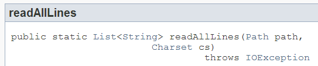

接著我們要來看看，第一個 HelloWorld.java 到底寫了什麼，為了方便，將程式碼在這邊再貼一次：
import java.nio.charset.Charset;
import java.io.IOException;
import java.nio.file.*;
import static java.lang.System.*;
public class HelloWorld {
public static void main(String[] args) {
Path source = Paths.get(args[0]);
Charset charset = Charset.forName("UTF-8");
try {
for(String line : Files.readAllLines(source, charset)) {
out.println(line);
}
} catch(IOException ex) {
err.println(ex.getMessage());
}
}
}這個程式碼就包括了 Java 中套件管理、輸入輸出（Input / Output）、字元編碼與例外處理等的特色，與其只給你一個簡單的 Hello! World! 程式，不如一開始就來面對它們。
套件管理
程式開發中會使用到程式庫，程式庫中會包括許多類別，為了避免彼此名稱衝突，也為了避免檔案彼此覆蓋，Java 提到了套件（Package）來加以管理，之後還會介紹套件的package 語法與實體架構。目前你需知道的是，在程式中會使用到全名（Fully qualified name）為 java.nio.charset.Charset、java.io.IOException 兩個類別，其中 java.nio.charset 與 java.io 分別是 Charset 與 IOException 的套件名稱。不過每次都要打這麼長的名稱，撰寫上過於冗長，因而使用 import 語句事先聲明全名，之後程式中就可以使用 Charset、IOException 來代替全名。
如果有很多個類別都擁有相同的套件名稱，逐一使用
import 事先宣告全名也是很累人的事，此時可以在套件名稱之後使用 * 來表示將會用到此套件下數個類別，例如 import java.nio.file.*。
在 Java 中可使用套件組織類別之外，對於一些語言中有的函式（Function），Java 可使用靜態（
static）方法定義於類別之中，也就是說，類別是作為靜態方法的名稱空間（Namespace）；具體實例就是範例中定義的 main 靜態方法，是以 HelloWorld 類別作為名稱空間，除了靜態方法，也可以定義靜態變數，也就是以類別作為名稱空間的變數；對於靜態方法或變數，建議以類別名稱來存取，例如 System.out。
因此你也可以看出，
Paths.get 表示了 get 是定義在 Paths 類別中的靜態方法，而 Charset.forName 表示了 forName 是定義在 Charset 中的靜態方法。
有時類別名稱寫出來會讓程式比較清楚，但有時對程式可讀性沒有幫助時反而顯得太過麻煩，此時可以使用像是
import static java.lang.System.* 這樣的方法，來宣告將使用到 java.lang.System 下的靜態變數或方法，之後就可以直接以變數名或方法名來進行操作。
輸入輸出
Java 的程式進入點是public static void main(String[] args)，為何這麼寫？要給簡單答案的話「這是規定」，要解釋也可以，main 是公開（public）方法，如此才能在其他套件中取用，它是靜態成員，因此 JVM 就可以在收集好命令列引數（Command line arguments）為一個字串陣列 args 後，以 HelloWorld.main(args) 來呼叫它。
在 Java 中進行輸入輸出可以基於串流（Stream）程式庫，或是基於高階的 New IO 程式庫，
Files.readAllLines(source, charset) 就是高階 New IO 程式庫的功能（嚴格來說，這邊用到了 JDK7 增加的 NIO2 功能，在這之前，則是 JDK1.4 增加的 NIO 功能），可以讀取指定來源路徑的內容，依指定字元編碼轉換為字串，傳回 List 表示檔案的每一行。知道為何這邊要使用 UTF-8 嗎？在 Ubuntu 12.04 LTS 中，預設文字編碼是 UTF-8。
for 迴圈語法可以與 List 結合，for(String line : Files.readAllLines(source, charset)) 的讀法是「對於 Files.readAllLines」讀取的每一行，指定給 line 變數，然後執行迴圈內容。
迴圈中的
out 實際上 java.lang.System 中定義的靜態變數 out，代表標準輸出（Standard output），通常指終端機，out.println 要求在標準輸出中列示一行並產生換行字元。類似地，err 是 java.lang.System 中定義的靜態變數 err，代表標準錯誤（Standard error）輸出。
例外
程式中的錯誤總是無所不在，Java 中對於錯誤的表示，不以某個常數來表示，這也是為何程式進入點宣告為void 表示不傳回值的原因。例外（Exception）是 Java 表示錯誤的方式之一，我們可以嘗試（try）執行程式區塊，如果有錯誤發生的話，會被包裝為例外物件，如果想要針對錯誤處理，可以捕捉（catch）例外。以上例來說，我們嘗試執行：
try {
for(String line : Files.readAllLines(source, charset)) {
out.println(line);
}
}如果
Files.readAllLines 真的發生輸入輸出上的錯誤，會拋出 IOException，因為程式中指定捕捉該例外：
catch(IOException ex) {
err.println(ex.getMessage());
}如果真的發生錯誤了，就可取得訊息並透過標準錯誤輸出來顯示。只是，我們怎麼知道在這邊要捕捉
IOException？因為當初設計 Files.readAllLines 方法時，就好心地在方法的原始碼上聲明了，這個方法會拋出 IOException，這可以在 文件 查詢到：
{kind=link}

這麼做的好處之一是，只要查詢文件，不用看原始碼，也可以知道這個方法會拋出什麼例外，實際上，如果你忘了要處理例外，像是 …
import java.nio.charset.Charset;
import java.nio.file.*;
public class HelloWorld {
public static void main(String[] args) {
Path source = Paths.get(args[0]);
Charset charset = Charset.forName("UTF-8");
for(String line : Files.readAllLines(source, charset)) {
System.out.println(line);
}
}
}忘了要處理宣告的
IOException 例外，編譯器也會以編譯失敗來提示你必須處理 IOException：
/home/codedata/Hello/src/main/java/HelloWorld.java:8: error: unreported exception IOException;
must be caught or declared to be thrown
for(String line : Files.readAllLines(source, charset)) {
^
1 error很貼心的設計嗎？實際上，Java 是唯一採用這種作法的語言，然而這也是 Java 最常被攻訐的缺點之一，因為這必須造成語法上的繁瑣，在應用程式演化至一定規模時，也會遭遇到設計上的麻煩，有時你就是不想或無法在現階段處理例外，也得明確地採用某個處理方式，像是使用這邊的
try-catch，或是在方法聲明 throws，像是在設計 Files.readAllLines 方法時，並不會知道到時使用者會在哪個環境中呼叫，因此 Files.readAllLines 無法私自處理掉 IOException，只好在程式碼上使用 throws 宣告 IOException，將 IOException 的處理權交給呼叫 Files.readAllLines 方法的使用者。
無論如何，Java 一直堅持著這樣的例外處理風格，這就成了 Java 的特色了（Java 是門囉囉嗦嗦的語言，只是它有它囉嗦的道理），與其抗拒它，不如正確地認識如何使用它，這會是日後你繼續深入 Java 時必修的課題。
第一堂課的內容就到這邊了，我們認識了 Java 環境的安裝與準備，寫了第一個 Java 程式，瞭解了一些套件管理、輸入輸出以及例外處理等 Java 中特有的特性，休息一下！後面要來進入第二堂課，瞭解更多 Java 語言的細節。